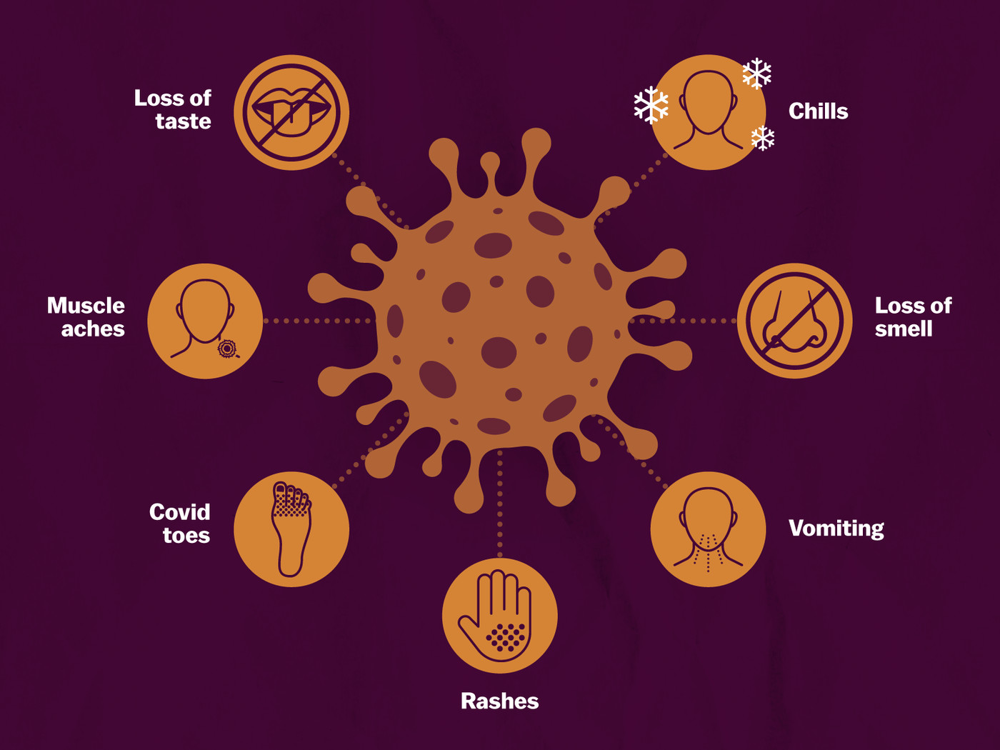

Welcome to diseasesIndicator
What is Corona virus?
Coronavirus disease 2019 (COVID-19) is a contagious disease caused by the virus SARS-CoV-2. The first known case was identified in Wuhan, China, in December 2019. The disease quickly spread worldwide, resulting in the COVID-19 pandemic.The new name of this disease is coronavirus disease 2019, abbreviated as COVID-19. In COVID-19, ‘CO' stands for ‘corona,' ‘VI' for ‘virus,' and ‘D' for the disease. Formerly, this disease was referred to as "2019 novel coronavirus" or "2019-nCoV."
What are the symptoms of COVID-19?
People with COVID-19 have had a wide range of symptoms reported – ranging from mild symptoms to severe illness. Symptoms may appear 2-14 days after exposure to the virus. Anyone can have mild to severe symptoms. Possible symptoms include:
- Fever or chills
- Cough
- Shortness of breath or difficulty breathing
- Fatigue
- Muscle or body aches
- Headache
- New loss of taste or smell
- Sore throat
- Congestion or runny nose
- Nausea or vomiting
- Diarrhoea

How does the coronavirus spread?
As of now, researchers know that the coronavirus is spread through droplets and virus particles released into the air when an infected person breathes, talks, laughs, sings, coughs or sneezes. Larger droplets may fall to the ground in a few seconds, but tiny infectious particles can linger in the air and accumulate in indoor places, especially where many people are gathered and there is poor ventilation. This is why mask-wearing, hand hygiene and physical distancing are essential to preventing COVID-19.
What can I do to protect myself and prevent the spread of disease?
You can reduce your chances of being infected or spreading COVID19 by taking some simple precautions:
- Regularly and thoroughly clean your hands with an alcohol- based
hand rub or wash them with soap and water. Why? Washing
your hands with soap and water or using alcohol-based hand
rub kills viruses that may be on your hands.
- Maintain at least 1 metre (3 feet) distance between yourself and
anyone who is coughing or sneezing. Why?
When someone coughs or sneezes they spray small liquid
droplets from their nose or mouth which may contain virus. If you
are too close, you can breathe in the droplets, including the
COVID-19 virus if the person coughing has the disease.
- Avoid touching eyes, nose and mouth. Why?
Hands touch many surfaces and can pick up viruses. Once
contaminated, hands can transfer the virus to your eyes, nose
or mouth. From there, the virus can enter your body and can
make you sick.
- Make sure you, and the people around you, follow good
respiratory hygiene. This means covering your mouth and nose
with your bent elbow or tissue when you cough or sneeze. Then
dispose of the used tissue immediately. Why?
Droplets spread virus. By following good respiratory hygiene you
protect the people around you from viruses such as cold, flu and
COVID-19.
- Stay home if you feel unwell. If you have a fever, cough and
difficulty breathing, seek medical attention and call in advance.
Follow the directions of your local health authority. Why?
National and local authorities will have the most up to date
information on the situation in your area. Calling in advance will
allow your health care provider to quickly direct you to the right
health facility. This will also protect you and help prevent spread
of viruses and other infections.
- Keep up to date on the latest COVID-19 hotspots (cities or local
areas where COVID-19 is spreading widely). If possible, avoid
traveling to places – especially if you are an older person or
have diabetes, heart or lung disease. Why?
You have a higher chance of catching COVID-19 in one of these
areas.